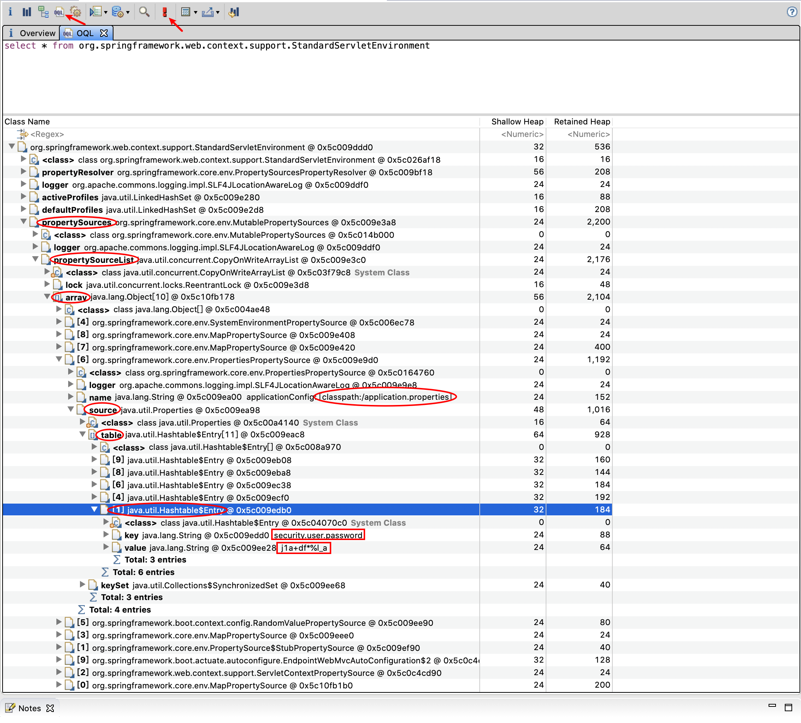
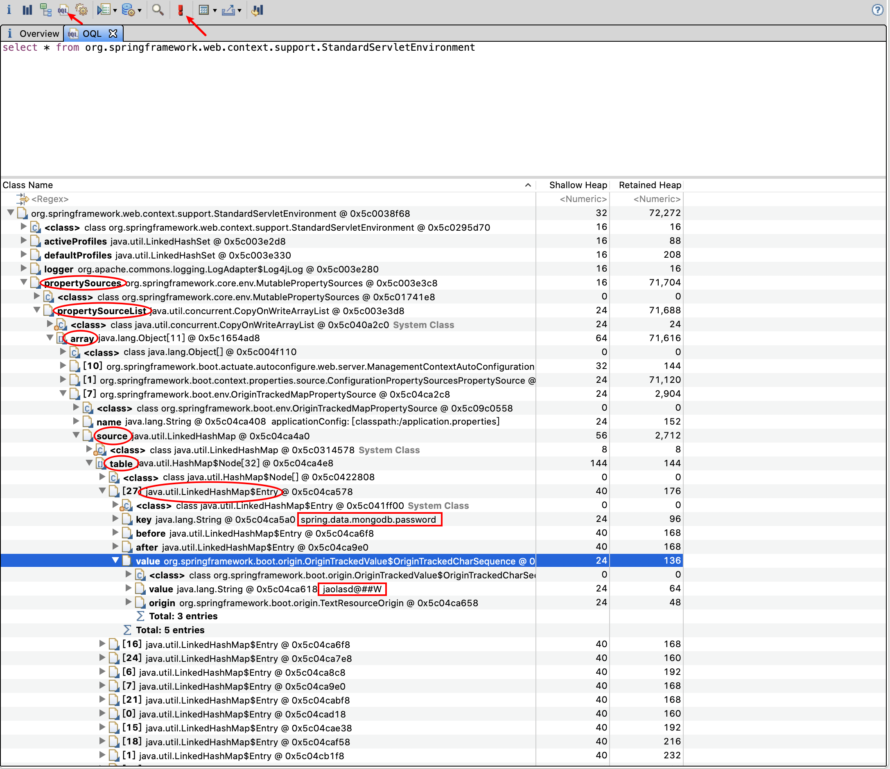

MAT 查找 spring heapdump中的密码明文
一、简介：
访问 /env 接口时，spring actuator 会将一些带有敏感关键词 (如 password、secret) 的属性名对应的属性值用 号替换，以达到脱敏的效果。在目标既不出网，/jolokia 接口又没有合适的 MBean 或者不支持 POST 请求的情况下，很多获取被星号脱敏的密码的明文的方法就失效了。这时候就可以利用 Eclipse Memory Analyzer 工具来分析 /heapdump 或 /actuator/heapdump 接口下载的 jvm heap 信息，查找密码明文。
二、查找方法：
使用 Eclipse Memory Analyzer 直接打开下载的 heapdump 文件，点击 OQL 标签，在查询框中输入
1 | select * from org.springframework.web.context.support.StandardServletEnvironment |
然后点击红色感叹号执行查询。如下图， spring boot 1.x 版本 heapdump 查询结果，最终结果存储在 java.util.Hashtable$Entry 实例的键值对中：
 所以也可以用1 | select * from java.util.Hashtable$Entry x WHERE (toString(x.key).contains("password")) |
来查询。下图为 spring boot 2.x 版本 heapdump 查询结果，最终结果存储在 java.util.LinkedHashMap$Entry 实例的键值对中：
所以也可以用
1 | select * from java.util.LinkedHashMap$Entry x WHERE (toString(x.key).contains("password")) |